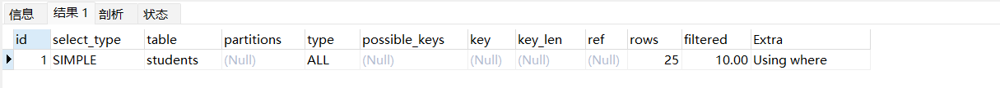

##查看现有mysql仓库 yum repolist all | grep mysql mysql-cluster-7.5-community/x86_64 MySQL Cluster 7.5 C disabled mysql-cluster-7.5-community-source MySQL Cluster 7.5 C disabled mysql-cluster-7.6-community/x86_64 MySQL Cluster 7.6 C disabled mysql-cluster-7.6-community-source MySQL Cluster 7.6 C disabled mysql-cluster-8.0-community/x86_64 MySQL Cluster 8.0 C disabled mysql-cluster-8.0-community-debuginfo/x86_64 MySQL Cluster 8.0 C disabled mysql-cluster-8.0-community-source MySQL Cluster 8.0 C disabled mysql-connectors-community/x86_64 MySQL Connectors Co enabled: 199 mysql-connectors-community-debuginfo/x86_64 MySQL Connectors Co disabled mysql-connectors-community-source MySQL Connectors Co disabled mysql-tools-community/x86_64 MySQL Tools Communi enabled: 92 mysql-tools-community-debuginfo/x86_64 MySQL Tools Communi disabled mysql-tools-community-source MySQL Tools Communi disabled mysql-tools-preview/x86_64 MySQL Tools Preview disabled mysql-tools-preview-source MySQL Tools Preview disabled mysql57-community/x86_64 MySQL 5.7 Community disabled mysql57-community-source MySQL 5.7 Community disabled mysql80-community/x86_64 MySQL 8.0 Community enabled: 364 ##目前只有mysql80-community是up的 mysql80-community-debuginfo/x86_64 MySQL 8.0 Community disabled mysql80-community-source MySQL 8.0 Community disabled
ls /etc/yum.repos.d/ | grep mysql mysql-community-debuginfo.repo mysql-community.repo mysql-community-source.repo
##sed -i替换掉文件内部的内容 ##sed xxx：只是在bash上显示 cd /etc/yum.repos.d/ sed -i 's/gpgcheck=1/gpgcheck=0/g' mysql-community.repo \ sed -i 's/gpgcheck=1/gpgcheck=0/g' mysql-community-source.repo \ sed -i 's/gpgcheck=1/gpgcheck=0/g' mysql-community-debuginfo.repo
sed -i 's/gpgcheck=1/gpgcheck=0/g' base.repo
##安装mysql8.0 yum -y install mysql-server
4.初始化mysql
1 2 3 4 5 6 7 8
systemctl enable --now mysqld
##初始化，8.0往后一般是不用执行了 mysql_insure_installation
##查看mysqld.log内的临时pass cat /var/log/mysqld.log | grep temporary 2022-08-07T03:37:10.803391Z 6 [Note] [MY-010454] [Server] A temporary password is generated for root@localhost: W6S2wp;pXiyf
5.因为Cent OS 7安装mysql 8.0的话，会有密码策略的显示，是mysql内的一个变量，卸载validate_password密码验证组件
##yum info mysql-server ##yum info mariadb ##apt list mysql-server Cent OS 7：自带mariadb Version : 5.5.68 Cent OS 8(rocky 8.6)：自带MySQL 8.0.26 ubuntu 20.04：自带MySQL 8.0.30
sed -i 's/DNS/#DNS/g' /etc/sysconfig/network-scripts/ifcfg-ens33 ; systemctl restart network mysql> status ##查看MySQL状态，可以看MySQL一些版本，字符集等 mysql> status -------------- mysql Ver 8.0.30 for Linux on x86_64 (MySQL Community Server - GPL)
Connection id: 8 Current database: Current user: root@localhost SSL: Not in use Current pager: stdout Using outfile: '' Using delimiter: ; Server version: 8.0.30 MySQL Community Server - GPL Protocol version: 10 Connection: Localhost via UNIX socket Server characterset: utf8mb4 ##指定字符集 Db characterset: utf8mb4 Client characterset: utf8mb4 Conn. characterset: utf8mb4 UNIX socket: /var/lib/mysql/mysql.sock Binary data as: Hexadecimal Uptime: 5 min 4 sec
Threads: 2 Questions: 5 Slow queries: 0 Opens: 119 Flush tables: 3 Open tables: 38 Queries per second avg: 0.016 --------------
vim .bashrc export MYSQL_PS1="(\\u@\\h) [\\d]\\_" \\u：代表当前登录MySQL的用户 \\h：当前登录的主机host，现在为local后使用 [\\d]：表示default database，用户自行选择的库
显示效果： (root@localhost) [(none)]>use mysql Reading table information for completion of table and column names You can turn off this feature to get a quicker startup with -A
##再次查看端口，发现是没有端口了，但是通过本地的socket套接字还是可以连接的 [root@master ~]#ss -ntl | grep 3306 [root@master ~]#mysql -uroot -p123 mysql: [Warning] Using a password on the command line interface can be insecure. --->证明是socket连接的 (root@localhost) [(none)]>status UNIX socket: /var/lib/mysql/mysql.sock
##1.查看MySQL的性能指标，线程数，处理的任务数，慢查询等等一些性能指标 mysqladmin -uroot -p123 status mysqladmin: [Warning] Using a password on the command line interface can be insecure. Uptime: 2198 Threads: 3 Questions: 52 Slow queries: 0 Opens: 180 Flush tables: 3 Open tables: 99 Queries per second avg: 0.023
##2.计划任务实现MySQL故障重启 mysqladmin -uroot -p123 ping mysqladmin: [Warning] Using a password on the command line interface can be insecure. mysqld is alive
##如果返回的$?为1，不正常，则重启MySQL(不常用) mysql -uroot -p123 ping || systemctl restart mysqld
(root@localhost) [catyer]>select*from student; +----+------+-----+------+ | id | name | sex | age | +----+------+-----+------+ |1| cat | M |25| +----+------+-----+------+ 1rowinset (0.00 sec)
##执行一个.sql插入10w条记录的脚本 ##创建一个表，id自增主键，名字10个字符，工资默认20 createtable testlog (id int auto_increment primary key,name char(10),salary intdefault20);
##声明一个函数 delimiter $$
createprocedure sp_testlog() begin declare i int; set i =1; while i <=100000 do insertinto testlog(name,salary) values (concat('wang',FLOOR(RAND() *100000)),FLOOR(RAND() *1000000)); set i = i +1; end while; end$$
delimiter ;
##执行函数，用了49s call sp_testlog; CALL sp_testlog; > OK > 时间: 49.073s
##查询表内一共有多少条记录：count(*)，有25条，只显示有值的，如果为NULL则没有 selectcount(*) from students;
##空或者非空，存在或者非存在 NULL isnotNULL exist isnot exist
select+where查询
limit：可以限制首页可以查看多少条记录，过了就要翻下一页
1 2 3 4 5 6 7 8 9 10 11 12 13
##精确查询到某一行，and并列 select*from students where age <20and gender='F';
##or或者 select*from students where age <20or gender='F';
##相同列不同的取数，同一列不同值 从1班和3班中挑出女生 select*from students where classid in (1,3) and gender='M';
##between之间 1班和3班中取出年龄在20-30岁的学生 select*from students where classid in (1,3) and age between20and30;
select limit 限制查看的条目数
1 2 3 4 5 6 7 8 9 10 11 12 13 14 15 16 17 18
##直接看前3条记录 select*from students limit 3; select*from students limit 10; select*from students orderby age desc limit 5; 25 Sun Dasheng 100 M 3 Xie Yanke 53 M 216 6 Shi Qing 46 M 5 13 Tian Boguang 33 M 2 4 Ding Dian 32 M 44
##limit跳过前3行，从第4行开始显示6行 select*from students limit 3,6; 4 Ding Dian 32 M 44 5 Yu Yutong 26 M 31 6 Shi Qing 46 M 5 7 Xi Ren 19 F 3 8 Lin Daiyu 17 F 7 9 Ren Yingying 20 F 6
where判断是否为空
1 2
select * from students where classid is null; select * from students where classid is not null;
模糊查询like
1 2 3 4 5
##查询以name ma开头的记录 select*from students where name like "%ma%";
##查询包含姓名内包含x的记录，可以作为在网站内查询某个商品，一般都是模糊查询，比如我要查罗技，但是这个品牌下有很多记录，会显示所有的模糊查询记录，然后按照一定顺序(比如说购买量)显示出来 select*from students where name like "%x%";
聚合函数
1 2 3 4 5 6 7
##统计平均年龄，总数 selectcount(*) from students; selectavg(age) from students; selectsum(age) from students;
##男生女生中年龄最大的，以性别分组 selectmax(age) from students groupby gender;
##groupby分组统计，按照性别 select gender,avg(age) from students groupby gender; M 33.0000 F 19.0000
##添加多一个字段，就报错 select gender,avg(age),stuid from students groupby gender >1055- Expression #3ofSELECT list isnotinGROUPBY clause andcontains nonaggregated column'hellodb.students.StuID' which isnot functionally dependent on columns inGROUPBY clause; this is incompatible with sql_mode=only_full_group_by
##groupby后继续过滤条件：having或者是where，两种写法；from后面加where过滤条件，或者是groupby后面加having select gender,avg(age) from students groupby gender; M 33.0000 F 19.0000
select gender,avg(age) from students where gender='F'groupby gender; select gender,avg(age) from students groupby gender having gender='M';
##多个字段Groupby，过滤掉空行 select ClassID,gender,avg(age) from students WHERE ClassID isnotnullgroupby gender,ClassID;
select order by排序
1 2 3 4
##正序倒序排序，正序从小到大，倒序从大到小，类似sort，sort默认由小到大，sort -r从大到小 ##排序 select*from students orderby age; select*from students orderby age desc;
7.SQL多表查询(重点掌握)
子查询：嵌套SQL语句
SQL语句中嵌套了别的查询结果
1 2 3 4 5 6 7 8 9 10
##子查询，实现修改老师年龄为学生最大年龄 selectmax(age) from students; update teachers set age=(selectmax(age) from students) where tid='1'; 1 Song Jiang 100 M 2 Zhang Sanfeng 94 M 3 Miejue Shitai 77 F 4 Lin Chaoying 93 F
##子查询作为条件 select*from teachers where age=(selectmax(age) from students);
联合查询union(字段数量相同)
将多张表合并成一张表，联合查询这个大表
需要相同字段数量，不能字段数量不统一，最好是字段的数据类型类似或者相同
1 2 3 4 5 6 7 8 9 10 11 12 13
##联合查询，凡是查询都可以加别名 select stuid,name,age,gender from students unionselect*from teachers; select stuid ID,name 姓名,age 年龄,gender 性别 from students unionselect*from teachers; 1 Shi Zhongyu 22 M 2 Shi Potian 22 M 3 Xie Yanke 53 M 4 Ding Dian 32 M 5 Yu Yutong 26 M 6 Shi Qing 46 M 7 Xi Ren 19 F 8 Lin Daiyu 17 F 9 Ren Yingying 20 F 10 Yue Lingshan 19 F
横向合并，交叉连接cross join，乘积算法，不常用，因为出来的结果太大了
表1：学生表，25条记录
表2：老师表，4条记录，老师表和学生表逐一组合，形成4*25=100条记录
1 2
##cross join select * from students cross join teachers;
内连接inner join：交集
前提：两张表最好有类似的字段，一样的数据，不然无法筛选的
取两张表的相同字段的值，也可以指定查询的字段，显示出来，可以给查询的表写别名来区分不同的表的字段
1 2 3 4 5
##案例：学生表和老师表共同在于teacherid和tid有相同的 1.先列出需要查询显示的字段，students s teachers t，可用这样的表示法来写明哪张表 2.innerjoin内连接 3.on 条件判断相等 select s.StuID,s.name,s.TeacherID,t.name,t.tid from students s INNERJOIN teachers t on s.TeacherID=t.TID;
inner join相同条件的记录数只有3条
多次取内连接
1 2 3 4 5 6 7
##成绩表 ##显示学生成绩 select s.stuid,s.name,sc.CourseID,sc.Score from scores sc innerjoin students s on sc.StuID=s.StuID;
##三张表内连接取相同字段，在前面用select显示需要查询的字段，能显示出课程名称 ##显示学生id，姓名(student)，课程名(course)，分数(score) select st.stuid,st.name,co.Course,sc.Score from scores sc innerjoin students st on sc.StuID=st.StuID innerJOIN courses co on sc.CourseID=co.CourseID;
##leftjoin ##因为stu有25条记录，teacher有4条记录，所以除了ID对应好的那几条，其余的teacher表都为NULL select*from students s leftJOIN teachers t on s.TeacherID=t.TID;
##rightjoin ##因为stu有25条记录，teacher有4条记录，所以除了ID对应好的那几条，其余的stu表都为NULL select*from students s rightJOIN teachers t on s.TeacherID=t.TID;
左外连接和右外连接取反：去掉对应条件，想想交集和并集就行
1 2 3 4 5
##left join取反 select * from students s left JOIN teachers t on s.TeacherID=t.TID where t.TID is null;
##right join取反 select * from students s right JOIN teachers t on s.TeacherID=t.TID;
完全外连接：左连接+union+右连接，可以去重
1 2 3 4
##完全外连接，结合左外连接+右外连接，去重 select*from students s leftJOIN teachers t on s.TeacherID=t.TID union select*from students s rightJOIN teachers t on s.TeacherID=t.TID;
##自己的表也可以配置两个别名 select*from emp e innerjoin emp l on e.id=l.leaderid
##自己的表也可以配置两个别名，跳出对应的列 select*from emp e innerjoin emp l on e.id=l.leaderid
##ifnull空函数，逻辑是员工表的领导ID=领导表他们自己的ID，先对应领导 ##leftjoin左连接，显示左表所有的值，如果是Innerjoin，则是显示一定有的，magedu就没了，不是交集，因为magedu没有leaderid select e.name 员工姓名,IFNULL(l.name,'大boss') 领导姓名 from emp e leftjoin emp l on e.leaderid=l.id
有关MySQL数据库的其他功能过程
1.视图view
功能作用：类似表，可以将一段查询语句的结果当做一个view来执行，后续可以查看
1 2 3 4 5 6
##创建视图 createview v_leader asselect e.name 员工姓名,IFNULL(l.name,'大boss') 领导姓名 from emp e leftjoin emp l on e.leaderid=l.id select*from v_leader;
##创建表，生成10w条记录 createtable if not exist testlog (id int auto_increment primary key,name char(10),salary intdefault20);
delimiter $$ ##定义结束符
createprocedure sp_testlog() begin declare i int; set i =1; while i <=100000 do insertinto testlog(name,salary) values (concat('wang',FLOOR(RAND() *100000)),FLOOR(RAND() *1000000)); set i = i +1; end while; end$$
delimiter ;
##执行存储过程 call sp_testlog;
##查看表的记录 show tables; selectcount(*) from testlog;
##创建trigger，加减的触发器，每新加一条记录(eachrow)，count就会+1；每减少一条记录，count就会-1 createtrigger trigger_incre after insert on student_info foreachrow update stu_count set stu_count=stu_count+1;
createtrigger trigger_decre after delete on student_info foreachrow update stu_count set stu_count=stu_count-1;
vim /etc/my.cnf #skip-grant-tables systemctl restart mysqld
进入到数据库后，发现更改密码的操作无法执行
1 2
(root@localhost) [(none)]>alter user root@'localhost' identified by '123'; ERROR 1290 (HY000): The MySQL server is running with the --skip-grant-tables option so it cannot execute this statement
##之前的报错 updateuserset authentication_string=password'123456'whereuser='root'; ERROR 1064 (42000): You have an error in your SQL syntax; check the manual that corresponds to your MySQL server version for the right syntax to use near ''123456' where user='root''at line 1
##mysql8.0修改默认密码 1.设置为空 update user set authentication_string='' where user=root
2.将配置文件内的skip注释掉，重启服务 vim /etc/my.cnf #skip-grant-tables systemctl restart mysqld
3.使用空密码登录到DB mysql
4.修改本地用户密码 alter user root@'localhost' identified by '123'; flush privileges;
5.登录 mysql -uroot -p123
解决MySQL8.0无法使用远程登录的问题caching_sha2_password
在创建好一个用户后，因为MySQL8.0默认的密码策略，导致我们一时间没法直接连接，出现这个报错
1
ERROR 2059 (HY000): Authentication plugin 'caching_sha2_password' cannot be loaded: /usr/lib64/mysql/plugin/caching_sha2_password.so: cannot open shared object file: No such file or directory
##最佳做法：可以在赋予密码的时候，加上mysql_native_password，记住这种写法，需要设置简单密码的时候，能不改全局尽量不改全局 alteruser catyer@'10.0.0.%' IDENTIFIED WITH mysql_native_password by'123'; flush privileges;
createuser'wpuser'@'localhost' identified by'123'; grantall privileges on wordpress.*to'wpuser'@'%'withgrant option;
##登录尝试成功 mysql -ucatyer -p123 -h10.0.0.132 Warning: Using a password on the command line interface can be insecure. Welcome to the MySQL monitor. Commands endwith ; or \g. Your MySQL connection id is9 Server version: 8.0.30 MySQL Community Server - GPL
##创建索引，查看某张表的索引，删除索引 create index name on testlog(name); show indexes from testlog\G; show index from testlog; drop index idex_salary on testlog;
##查看表结构，stuid为主键，自增长 desc students +-----------+------------------+------+-----+---------+----------------+ | Field | Type |Null| Key |Default| Extra | +-----------+------------------+------+-----+---------+----------------+ | StuID |int unsigned |NO| PRI |NULL| auto_increment | | Name |varchar(50) |NO||NULL|| | Age | tinyint unsigned |NO||NULL|| | Gender | enum('F','M') |NO||NULL|| | ClassID | tinyint unsigned | YES ||NULL|| | TeacherID |int unsigned | YES ||NULL|| +-----------+------------------+------+-----+---------+----------------+ 6rowsinset (0.00 sec)
##查找某个表的索引，索引类型为btree索引，默认都是btree索引，默认都是b+tree索引 ##主键索引+STUID为主键 show index from students\G; ***************************1.row*************************** Table: students Non_unique: 0 Key_name: PRIMARY Seq_in_index: 1 Column_name: StuID Collation: A Cardinality: 25 Sub_part: NULL Packed: NULL Null: Index_type: BTREE Comment: Index_comment: Visible: YES Expression: NULL 1rowinset (0.01 sec)
查看是否有利用索引来进行查询：explain
1 2 3
explain select*from hellodb.students where stuid=6; key：是primary，证明就是主键索引，有利用索引的 rows：表示扫描了多少行得出来的
查询年龄(age字段)
1 2 3 4
##没有加索引的查询，rows=25意味着遍历了25条数据才查出来有年龄=22的记录 rows=25 type=ALL--->全表扫描 explain select*from hellodb.students where age=22;

创建索引：explain查看索引使用
MySQL内会有一定的优化，即使创建了索引也不一定使用，有时候全表查询快过索引的
1 2 3 4 5
select*from students; create INDEX idx_stuname(索引名称) on students(name)(表名(字段名)); ##想截取字段名前几位，可以写(name(5)) explain select*from hellodb.students where name='Shi Zhongyu';
select*from hellodb.students where name like's%'; explain select*from hellodb.students where name like's%'; 2 Shi Potian 22 M 17 6 Shi Qing 46 M 5 1 Shi Zhongyu 22 M 23 25 Sun Dasheng 100 M
select*from students where stuid=1; +-------+-------------+-----+--------+---------+-----------+ | StuID | Name | Age | Gender | ClassID | TeacherID | +-------+-------------+-----+--------+---------+-----------+ |1| Shi Zhongyu |50| M |2|3| +-------+-------------+-----+--------+---------+-----------+ 1rowinset (6.30 sec)
##user1 commit后，才可以 ##user2，修改stuid的值，发现一只卡住，就是死锁了，因为user1访问的事务还没提交，导致row级别加了写锁，导致无法读写操作，user2对于这条row的操作一直在等待 ##报错:timeout [hellodb]>update stu set age=20where stuid=1;
[hellodb]>update stu set age=20where stuid=1; ERROR 1205 (HY000): Lock wait timeout exceeded; try restarting transaction ##尝试重新提交事务
[hellodb]>update stu set age=20where stuid=1; Query OK, 1row affected (0.00 sec) Rows matched: 1 Changed: 1 Warnings: 0
##本地终端(操作用户)已经看到有记录生成了，别的终端还没看到 [hellodb]>select*from teachers; +-----+---------------+-----+--------+ | TID | Name | Age | Gender | +-----+---------------+-----+--------+ |1| Song Jiang |100| M | |2| Zhang Sanfeng |94| M | |3| Miejue Shitai |77| F | |4| Lin Chaoying |93| F | |5| catyer |10| M | |6| catyer |10| M | |7| catyer11 |11| F | +-----+---------------+-----+--------+ 7rowsinset (0.00 sec)
1 Song Jiang 100 M 2 Zhang Sanfeng 94 M 3 Miejue Shitai 77 F 4 Lin Chaoying 93 F 5 catyer 10 M 6 catyer 10 M
##执行commit，别的用户可以看到了 1 Song Jiang 100 M 2 Zhang Sanfeng 94 M 3 Miejue Shitai 77 F 4 Lin Chaoying 93 F 5 catyer 10 M 6 catyer 10 M 7 catyer11 11 F
[hellodb]>select*from teachers; +-----+---------------+-----+--------+ | TID | Name | Age | Gender | +-----+---------------+-----+--------+ |1| Song Jiang |100| M | |2| Zhang Sanfeng |94| M | |3| Miejue Shitai |77| F | |4| Lin Chaoying |93| F | |5| catyer |10| M | |6| catyer |10| M | |7| catyer11 |11| F | +-----+---------------+-----+--------+ 7rowsinset (0.00 sec)
执行了begin未提交的事务：脏数据dirty data
1 2
begin; update stu set age=50where stuid=1; --->脏数据
ls /data/mysql [root@rocky mysql]#ll | grep innodb drwxr-x---. 2 mysql mysql 4096 8月 28 15:13 #innodb_redo drwxr-x---. 2 mysql mysql 187 8月 28 15:13 #innodb_temp